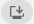

Die Business Central Desktop App abrufen
Wenn Sie einen Windows- (PC) oder macOS-Computer besitzen, können Sie die Business Central-App auf Ihrem Desktop installieren. Die App funktioniert mit Business Central online und lokal.
Warum die App verwenden?
Die Business Central-App ähnelt dem Web-Client, bietet aber einige Vorteile wie:
- Die App ist über das Menü Start sofort verfügbar, Sie können sie ganz einfach an die Taskleiste anheften oder sie standardmäßig starten lassen, wenn Sie Ihren Computer starten.
- Allgemein lässt sich die App auch schneller und flüssiger auf dem Bildschirm darstellen, ohne dass es zu Leistungsunterschieden im Vergleich zum Ausführen von Business Central im Browser kommt.
- Die App wird in einem eigenen Fenster geöffnet, unabhängig von allen Browserfenstern. Diese Funktion erleichtert die Suche, wenn Sie eine große Anzahl von Apps oder Browser-Tabs ausführen.
Wenn es mehr als eine Business Central-Umgebung gibt (nur online), können Sie die App für jede Umgebung separat installieren.
Wenn Sie die App für eine bestimmte Umgebung öffnen, wird der Name der Umgebung in den Fenstertitel aufgenommen. Wenn Sie in mehreren Business Central-Umgebungen arbeiten, wird jedes App-Fenster separat angezeigt. Anhand des Namens können Sie leichter erkennen, welches Fenster zu der jeweiligen Umgebung gehört.
Die App für Business Central online installieren
Es gibt zwei Möglichkeiten, die App für Business Central online zu installieren. Sie können es direkt über den Browser oder über den Microsoft Store installieren. Welchen Ansatz Sie auch immer wählen, es ist die gleiche App. Der Unterschied besteht darin, dass Sie bei der Installation über den Browser die App für jede Umgebung installieren können, wenn es mehr als eine gibt.
Aus dem Microsoft Store
- Gehen Sie zum Microsoft Store.
- Wählen Sie Abrufen > Installieren.
- Wenn die App installiert ist, wählen Sie Öffnen und melden sich dann bei Business Central an.
Wenn Sie die App das nächste Mal öffnen möchten, suchen Sie sie im Menü Start.
Über den Browser
Öffnen Sie den Business Central Web Client entweder in Microsoft Edge oder in Google Chrome.
Wenn die Seite zur Auswahl der Umgebung erscheint, können Sie eine der beiden Möglichkeiten nutzen:
- Wählen Sie die Umgebung aus und fahren Sie mit dem nächsten Schritt fort, um die App zu installieren. In diesem Fall wird die installierte App die von Ihnen gewählte Umgebung öffnen.
- Wählen Sie die Umgebung nicht aus und gehen Sie einfach zum nächsten Schritt, um die App zu installieren. In diesem Fall öffnet die installierte App die Seite zur Auswahl der Umgebung und nicht eine bestimmte Umgebung.
Um die App zu installieren, wählen Sie je nach Browser App verfügbar. Business Central installieren oder  Business Central installieren, dann Installieren.
Microsoft Edge Google Chrome :::image type="content" source="media/ui-edge-install-app-v2.png" alt-text="Illustration einer Schaltfläche zum Installieren einer App in Edge."::: :::image type="content" source="media/ui-chrome-install-app-v2.png" alt-text="Illustration einer Schaltfläche zum Installieren einer App in Chrome."::: Tipp
In Edge können Sie die App auch installieren, indem Sie das Menü Einstellungen und mehr im Browser aufrufen und dann Apps > Diese Website als App installieren > Installieren wählen.
Nach der Installation erscheint die App im Menü Start. Wenn Sie eine bestimmte Umgebung für die App ausgewählt haben, wird der Name der Umgebung dem Namen der App im Menü Start hinzugefügt.
Die App für Business Central lokal installieren
Die Installation der Desktop-App, wenn Sie Business Central lokal verwenden, erfolgt direkt über den Browser, wie oben beschrieben. Wenn Sie nur einen Mandanten haben, öffnen Sie einfach Business Central in Ihrem Browser und wählen Sie dann entweder . App verfügbar. Business Central installieren oder Business Central installieren wie oben gezeigt.
Der Unterschied besteht, wenn Sie mehrere Mandanten haben. Im Gegensatz zu Business Central online, wo Sie die App für verschiedene Umgebungen installieren können, können Sie die App nur für einen Mandanten installieren. Bevor Sie also die App installieren, wenn Sie mehrere Mandanten haben, stellen Sie sicher, dass Sie zum richtigen Mandanten wechseln. Wenn Sie die App nach der Installation öffnen, wird sie direkt den Mandanten öffnen.
Siehe auch
Häufig gestellte Fragen zu mobilen Apps
Vorbereitung auf die Verwendung
Arbeiten mit Business Central
Kostenlose E-Learning-Module für Business Central finden Sie hier